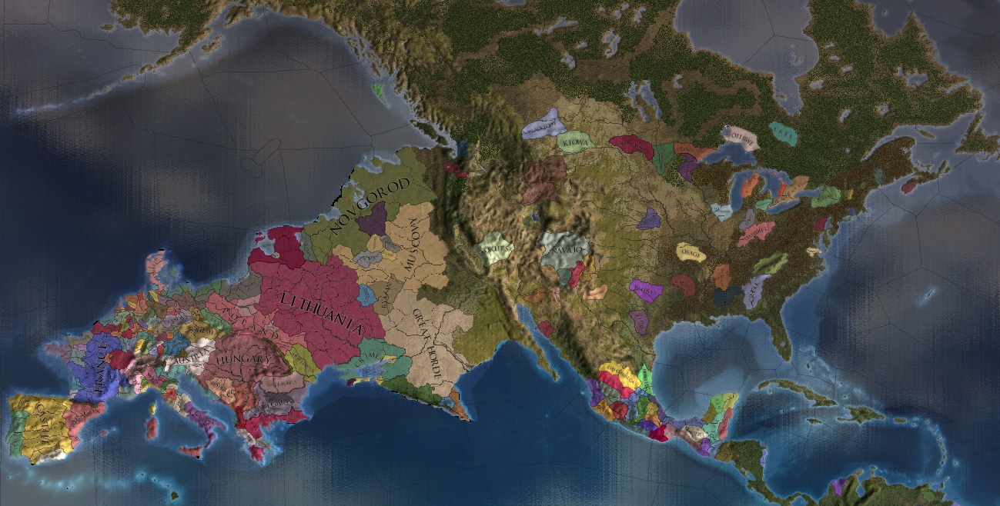

Hello, World!
Admiral Jezza#8380
- Discord Server
- Steam Profile
- MAL
Hey hey people, Admiral Jezza here, currently a programming student and working on a survival game, and also learning HTML/CSS which is what this site is for. I was also a modder for Paradox games HOIIV & EUIIV. More info below.
Stranded Buckos
This is just the basic survival game I'm working on in GMS2, where you play as three plane crash survivors, each possessing different abilities and can be switched between at any time depending on the situation to help them each escape.
Paradox Games
I threw together a few meme mods for HOIIV & EUIV that did crazy stuff like in pic related, surprisingly they were featured by big youtubers like Drew Durnil and iSorrowProductions. There wasn't much to it tho, since I was just editing image files in GIMP, and then very, very tediously editing 100s of province files slightly and positons using the -nudge function Paradox games have. HOIIV was moreso the mass provice file editing to make sure things like the national focuses worked.
Other
Give this article a read, real spooky stuff about the possible future of the internet.